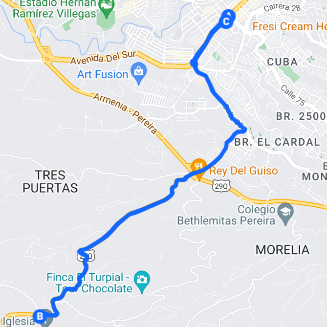

SALIDA
- INTERCAMBIADOR CUBA
- CLÍNICA SAN RAFAEL
- COLEGIO ALFONSO JARAMILLO
- BOMBA CORALES
- HOSPITAL SAN JOAQUÍN
- RELLENO SANITARIO
- BARRIO SAN JOAQUÍN
- INTERSECCIÓN CON VÍA A ALTAGRACIA
- EL RECREO
- PUERTAS DE ALCALÁ
- ENTRADA SAN MARCOS
- TRES PUERTAS
- LA SIRIA
- VÍA AL CENTRO POBLADO DEL CORREGIMIENTO MORELIA
REGRESO
- VÍA AL CENTRO POBLADO DEL CORREGIMIENTO MORELIA
- LA SIRIA
- ENTRADA A SAN MARCOS
- PUERTAS DE ALCALÁ
- EL RECREO
- INTERSECCIÓN CON VÍA A ALTAGRACIA
- SECTOR FRENTE AL BARRIO SAN JOAQUÍN
- HOSPITAL SAN JOAQUÍN
- GLORIETA CORALES
- CLÍNICA SAN RAFAEL
- INTERCAMBIADOR CUBA
MAPA DE RECORRIDO
CLICK AL MAPA PARA MAS DETALLES
